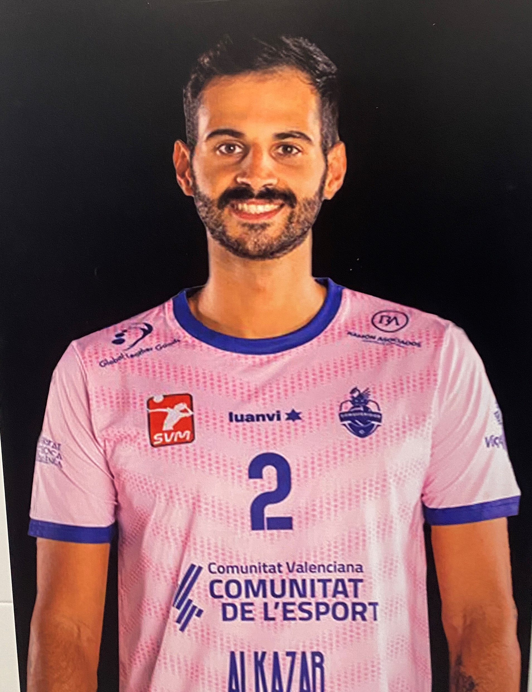

Anderson Grossi
31/05/1994
Brazilian
Volleyball Player

From VolleyBall to Web Developer
Summary
Hi, I'm Anderson Grossi, actually I'm a Professional VolleyBall player, and i'm starting the transition of my sportive carreer to the Web Development carreer.
Education
- 3 years of Physical Education's Bachelor Degree at UNG/SP
- 2 Years of Industrial Automation Engineering Bachelor Degree at Instituto Federal de São Paulo/SP
Work Experience
- Professional Volleyball Player
(2009-Present)
- Brazilian Universitary National Team
(2015-2019)
- Volleybal Coach - Iceland
(2021)
- Volleyball Referee
(2022-Present)
Skills
- Leadership
I was team captain in many clubs including FC Barcelona and Brasil National Team
- Comunicative
- Resolutive
Awards
- Rookie of the year at Centro Olimpico
2011